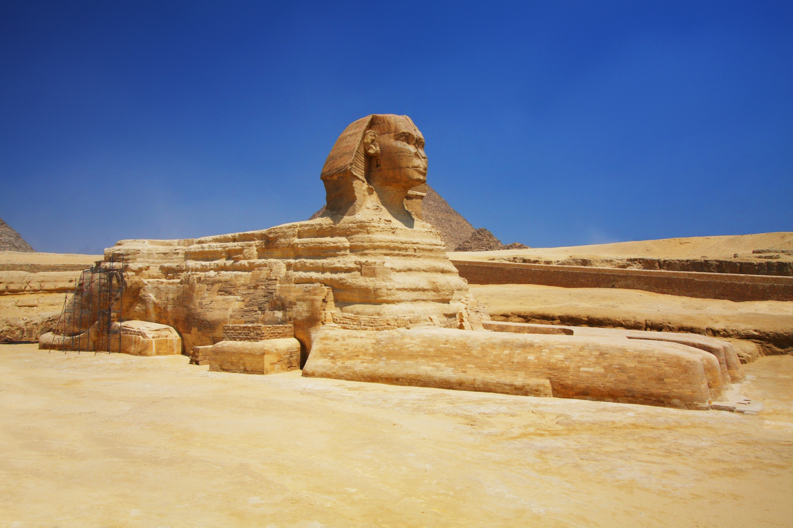
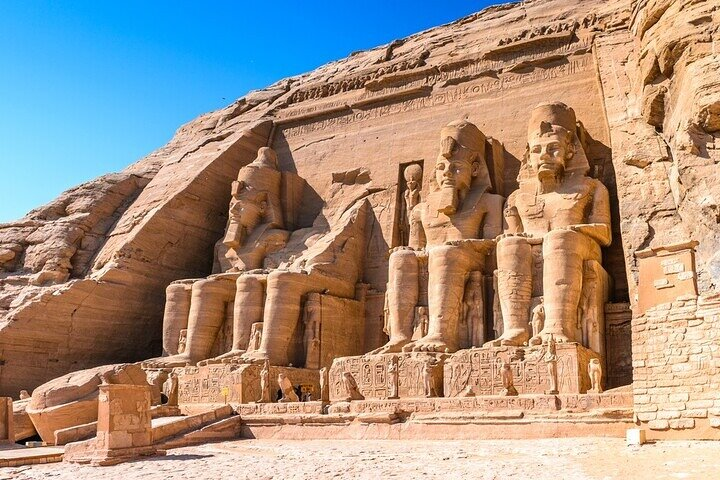
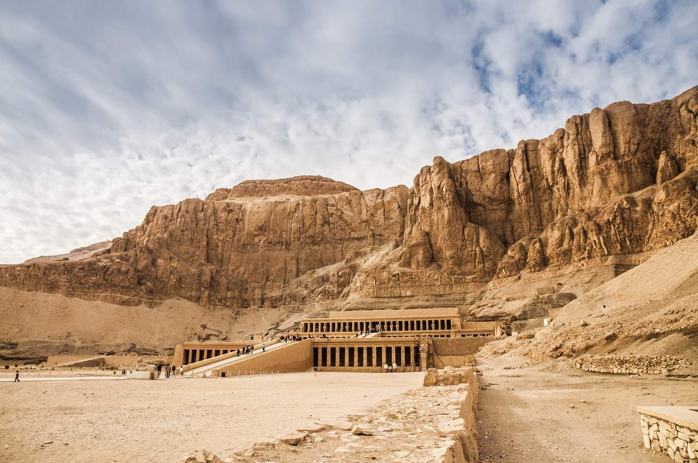

HORIZONTE
Melhores destinos no Egito
Pirâmides de Gizé e a Esfinge, Cairo
Única das Sete Maravilhas do Mundo Antigo que ainda está de pé, o complexo das Pirâmides de Gizé é de tirar o fôlego. As estruturas de Quéops, Quéfren e Miquerinos, guardadas pela misteriosa Esfinge, desafiam a lógica e o tempo. É um lugar de energia única, onde os visitantes podem explorar o interior das pirâmides e contemplar a grandiosidade da engenharia do Egito Antigo em meio ao deserto.

Templo de Abu Simbel, Assuã
Esculpido diretamente na rocha por ordem do faraó Ramsés II, Abu Simbel é uma das obras mais impressionantes da história. As quatro estátuas gigantescas do faraó sentadas na entrada vigiam o templo há mais de 3 mil anos. O mais incrível é que todo o complexo foi desmontado e movido para um lugar mais alto nos anos 60 para não ser submerso pelo Rio Nilo, um feito da engenharia moderna para salvar a história antiga.

Vale dos Reis, Luxor
Luxor é frequentemente chamada de "o maior museu ao ar livre do mundo", e o Vale dos Reis é o seu maior tesouro. Escondidas entre as montanhas áridas, encontram-se dezenas de tumbas de faraós, incluindo a famosa tumba de Tutancâmon. As cores das pinturas nas paredes das tumbas permanecem vibrantes após milênios, contando histórias sobre os deuses e a vida após a morte.

Templo de Karnak, Luxor
O Templo de Karnak não é apenas um templo, mas um vasto complexo de santuários, colunas e obeliscos. A Grande Sala Hipóstila, com suas 134 colunas gigantescas repletas de hieróglifos, faz qualquer turista se sentir pequeno diante de tanta história. É um local que foi ampliado por diversos faraós ao longo de 1.500 anos, resultando em um dos maiores centros religiosos da antiguidade.

Dicas de Planejamento: Egito
- Saúde e Segurança:
- Água: beba apenas água mineral engarrafada.
- Guias: prefira contratar egiptólogos credenciados.
- Protetor solar: indispensável, o sol do deserto é implacável.
- Vestimenta e Respeito:
- Roupas: prefira tecidos leves (linho/algodão) que cubram ombros e joelhos.
- Calçados: use tênis fechados para caminhar nas áreas das pirâmides.
- Lenços: úteis para mulheres ao entrar em mesquitas.